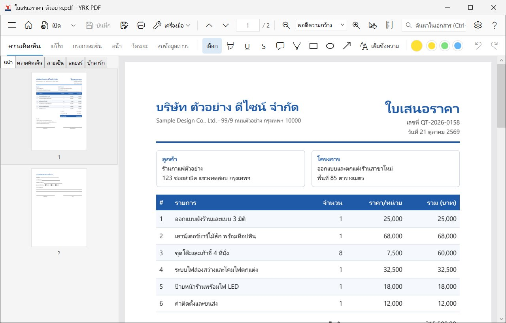
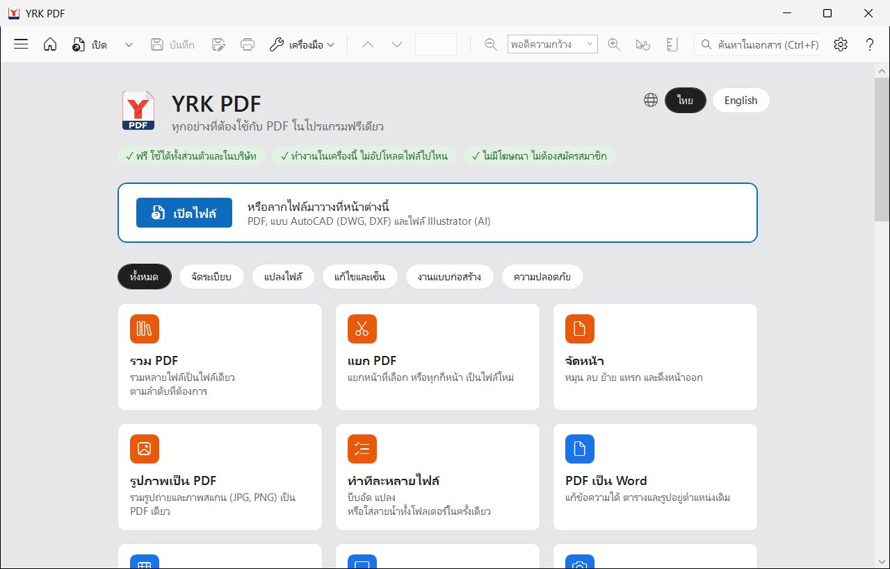
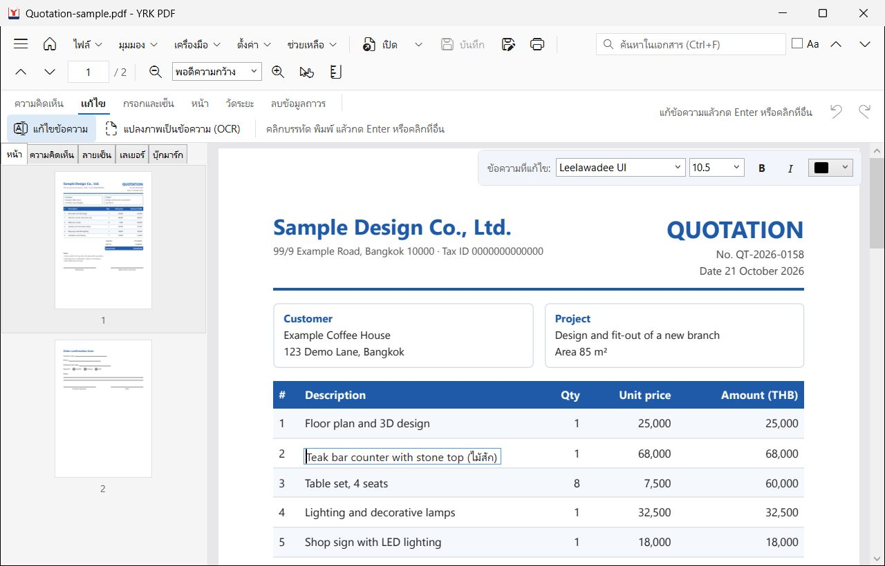
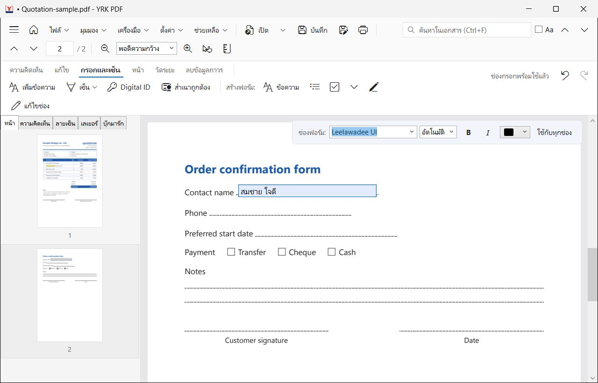
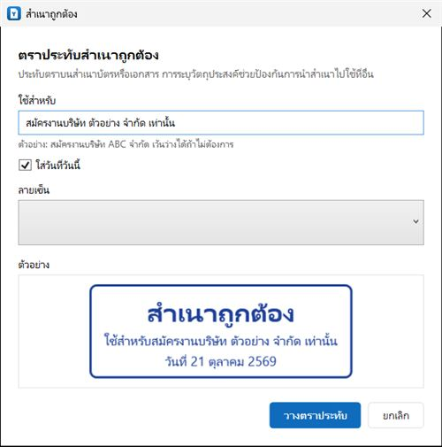
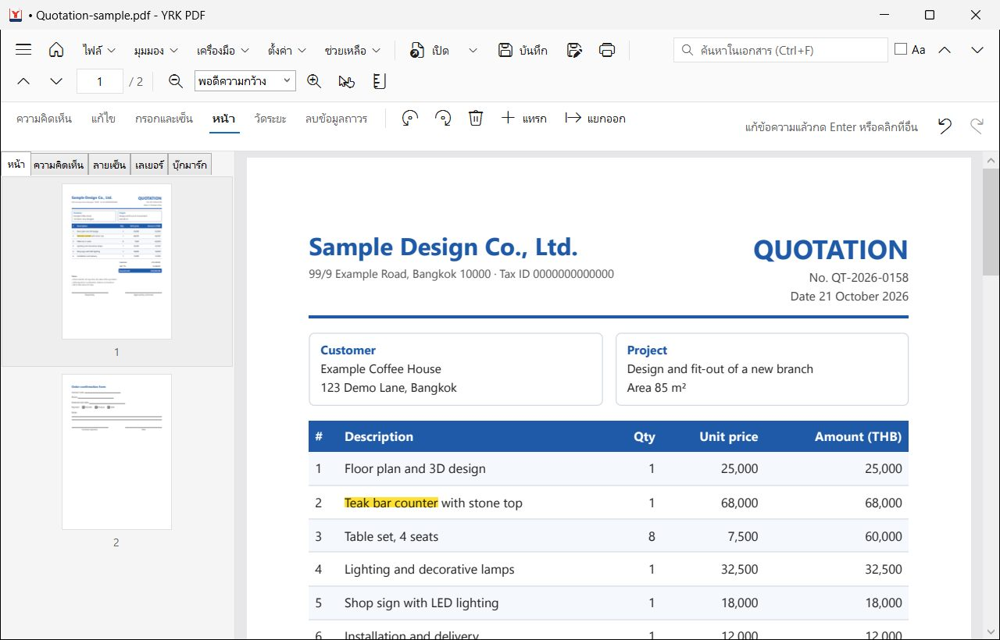
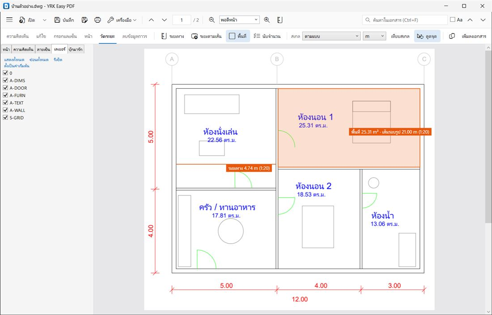

YRK PDF
คู่มือการใช้งานYRK PDF
โปรแกรม PDF ฟรีสำหรับ Windows อ่าน แก้ไข กรอกฟอร์ม เซ็นชื่อ จัดการหน้า แปลงไฟล์ และวัดแบบก่อสร้าง ทำงานในเครื่องของคุณทั้งหมด

เริ่มใช้งาน
YRK PDF ใช้ได้ฟรี ไม่มีโฆษณา ไม่ต้องสมัครสมาชิก และไม่ส่งไฟล์ของคุณไปที่ไหน
เปิดไฟล์
ลากไฟล์ PDF จาก File Explorer มาวางในหน้าต่างโปรแกรม
กด Ctrl +O หรือปุ่ม เปิด ส่วนลูกศรข้างปุ่มเปิดคือรายการไฟล์ล่าสุด
เปิดได้หลายไฟล์พร้อมกัน แต่ละไฟล์อยู่ในแท็บของตัวเอง
นอกจาก PDF ยังเปิดแบบ AutoCAD (DWG, DXF) ได้ด้วย
หน้าแรก
ตอนยังไม่เปิดไฟล์ หรือกดปุ่มรูปบ้าน จะเห็นหน้าแรกที่รวมเครื่องมือทั้งหมดแยกตามงาน คลิกการ์ดเพื่อเริ่มงานนั้นได้เลย

หน้าแรก: เครื่องมือทั้งหมดแยกตามงาน หน้าจอหลัก
แถวบน: เมนู ไฟล์ มุมมอง เครื่องมือ ตั้งค่า ช่วยเหลือ (เปิดด้วย Alt +ตัวอักษรแรกในภาษาอังกฤษ เช่น Alt +F ) ปุ่มเปิด บันทึก พิมพ์ เปลี่ยนหน้า ซูม และช่องค้นหาแถวที่สอง: แท็บงาน ความคิดเห็น · แก้ไข · กรอกและเซ็น · หน้า · วัดระยะ · ลบข้อมูลถาวร แต่ละแท็บมีเครื่องมือของตัวเอง ด้านขวาสุดคือปุ่มย้อนกลับและทำซ้ำแถบด้านข้าง: ภาพย่อของหน้า รายการความคิดเห็น ลายเซ็น เลเยอร์ของแบบ และบุ๊กมาร์ก ซ่อนหรือแสดงได้ด้วยปุ่มสามขีดมุมซ้ายบน
เปลี่ยนภาษา: เมนู ตั้งค่า → Language / ภาษา เลือกภาษาไทยหรือภาษาอังกฤษ
อ่านและค้นหา
ซูมและเลื่อนหน้า
ซูมด้วยปุ่ม + และ − หรือกด Ctrl ค้างแล้วหมุนล้อเมาส์ ช่องซูมมี พอดีหน้า และ พอดีความกว้าง
ลากเลื่อนหน้าด้วย เครื่องมือมือจับ (กด H ) หรือกด Space ค้างไว้แล้วลาก หรือลากด้วยปุ่มกลางของเมาส์
ไปหน้าที่ต้องการ: พิมพ์เลขหน้าในช่องเลขหน้า หรือคลิกภาพย่อในแถบด้านข้าง
ค้นหาและคัดลอก
กด Ctrl +F พิมพ์คำ แล้วกด Enter หรือ F3 เพื่อไปผลถัดไป เลือก Aa ถ้าต้องการให้ตัวพิมพ์เล็กใหญ่ตรงกัน
ลากคลุมข้อความด้วยเครื่องมือ เลือก แล้วกด Ctrl +C เพื่อคัดลอก
ภาษาไทยในไฟล์ที่เก็บสระหรือวรรณยุกต์ผิดลำดับ (เช่นไฟล์จาก Excel) โปรแกรมจะจัดให้ถูกเองตอนคัดลอกและค้นหา
ไฟล์สแกน: ถ้าค้นหาหรือคัดลอกไม่ได้ แสดงว่าในไฟล์มีแต่รูปภาพ ให้ใช้ แปลงภาพเป็นข้อความ (OCR) ก่อน (ดูบทที่ 7)
แก้ไขข้อความ
แก้คำในเนื้อ PDF ได้โดยตรง รองรับภาษาไทย ข้อความใหม่ยังเป็นตัวอักษรจริงที่ค้นหาและคัดลอกได้

คลิกบรรทัดหรือช่องในตาราง แล้วพิมพ์
ไปที่แท็บ แก้ไข แล้วเลือก แก้ไขข้อความ
คลิกบรรทัดที่ต้องการแก้ ถ้าคลิกในตาราง โปรแกรมจะเลือกเฉพาะช่องนั้น ช่องอื่นในแถวไม่ขยับ
พิมพ์ข้อความใหม่ แล้วกด Enter หรือคลิกที่อื่น ข้อความใหม่จะเข้าไปอยู่ในหน้าทันที
ถ้าไม่พอใจ กด Ctrl +Z เพื่อเอาข้อความเดิมคืน หรือกด Esc ระหว่างพิมพ์เพื่อยกเลิก
ฟอนต์
โปรแกรมใช้ฟอนต์เดิมของเอกสารถ้ามีในเครื่อง ถ้าไม่มีจะใช้ฟอนต์ที่ใกล้เคียงและปรับขนาดให้สูงเท่าเดิม ระหว่างพิมพ์เปลี่ยนฟอนต์ ขนาด ตัวหนา ตัวเอียง และสีได้จากแถบด้านบนของหน้า
ไฟล์จะเปลี่ยนจริงเมื่อบันทึก: ระหว่างทำงาน โปรแกรมเก็บการแก้ไขไว้ในสำเนาชั่วคราว ไฟล์ของคุณจะเปลี่ยนเมื่อกด Ctrl +S เท่านั้น
กรอกฟอร์มและเซ็นชื่อ
กรอกฟอร์ม
ถ้า PDF มีช่องกรอก คลิกในช่องแล้วพิมพ์ได้เลย ภาษาไทยแสดงถูกต้อง และเปิดต่อใน Adobe Acrobat ได้ตามปกติ
สร้างฟอร์มเอง
แท็บ กรอกและเซ็น → สร้างฟอร์ม เลือกชนิดช่อง เช่น ข้อความ รายการเลือก หรือช่องติ๊ก
ลากกรอบบนหน้า ตั้งชื่อช่อง แล้วกด เพิ่มช่อง
กด Enter หรือคลิกนอกช่อง ช่องจะพร้อมให้กรอกทันที
แก้หรือลบช่องที่มีอยู่ด้วย แก้ไขช่อง

ช่องกรอกที่เพิ่งสร้าง พิมพ์ได้ทันที ไม่ต้องบันทึกก่อน เซ็นชื่อ
กด เซ็น แล้วสร้างลายเซ็นใหม่ จะวาดด้วยเมาส์หรือปากกา พิมพ์ชื่อ หรือนำเข้ารูปลายเซ็นบนกระดาษขาว (โปรแกรมลบพื้นขาวให้) ก็ได้
คลิกบนหน้าเพื่อวางลายเซ็น แล้วลากเพื่อย้ายหรือย่อขยาย
ถ้าเลือกเก็บลายเซ็นไว้ใช้ครั้งหน้า โปรแกรมจะเข้ารหัสเก็บไว้ในเครื่องนี้
สำเนาถูกต้อง
ปุ่ม สำเนาถูกต้อง ประทับตรา "สำเนาถูกต้อง" บนสำเนาบัตรประชาชนหรือเอกสาร พร้อมลายเซ็น เขียนวัตถุประสงค์ได้ เช่น "สมัครงานบริษัท ABC จำกัด" เพื่อไม่ให้ใครนำสำเนาไปใช้ที่อื่น และเลือกใส่วันที่ของวันนี้ได้

ตราสำเนาถูกต้องพร้อมวัตถุประสงค์และลายเซ็น ตรายาง
ปุ่ม ตรายาง มีตราสำเร็จรูปที่ออฟฟิศใช้ทุกวัน ได้แก่ อนุมัติ ได้รับแล้ว จ่ายแล้ว ตรวจสอบแล้ว ต้นฉบับ สำเนา ด่วน ยกเลิก และลับ พร้อมวันที่แบบ พ.ศ. (เช่น 29 ต.ค. 2569) เลือกได้ว่าจะใช้ตราภาษาไทย อังกฤษ หรือสองภาษา (ไทยตัวใหญ่ มีอังกฤษตัวเล็กอยู่ใต้) เลือกวันที่อื่นได้ แก้ข้อความ สี และรูปทรงได้ ใส่บรรทัดเล็กใต้ตราได้ เช่น ชื่อบริษัทหรือ "โดย ......" แล้วกด บันทึกเป็นตราของฉัน เพื่อเก็บไว้ใช้ครั้งต่อไป
คลิกที่หน้าเพื่อวางตรา ลากเพื่อย้ายหรือปรับขนาดได้ ข้อความในตราบันทึกเป็นตัวอักษรจริง จึงค้นหาและคัดลอกได้
ลายเซ็นดิจิทัล (Digital ID)
ลายเซ็นดิจิทัล (PAdES) ยืนยันว่าใครเป็นคนเซ็น และถ้ามีคนแก้ไฟล์หลังเซ็น ผู้เปิดไฟล์จะเห็น กดปุ่ม Digital ID แล้วเลือก ID จาก USB token, เพิ่มไฟล์ .pfx จากผู้ออกใบรับรอง หรือสร้าง ID ใหม่ของตัวเอง เลือกได้ว่าจะแสดงลายเซ็นบนหน้าหรือไม่ และจะใส่การประทับเวลาที่เชื่อถือได้หรือไม่ (ต้องต่ออินเทอร์เน็ต) ลายเซ็นในไฟล์ดูได้จากแถบด้านข้าง แท็บ ลายเซ็น
ประเภทลายเซ็น: เลือก อนุมัติ สำหรับลายเซ็นทั่วไป หรือ รับรองเอกสารในฐานะผู้จัดทำ เพื่อกำหนดว่าหลังจากนี้ยังทำอะไรได้บ้าง (กรอกฟอร์มและเซ็น, ใส่ความคิดเห็นเพิ่ม หรือห้ามแก้ไขเลย) การรับรองทำได้เฉพาะลายเซ็นแรกของเอกสารข้อมูลตรวจสอบระยะยาว: เก็บใบรับรองและรายการใบรับรองที่ถูกเพิกถอนไว้ในไฟล์ (PAdES B-LT) ทำให้ตรวจลายเซ็นได้แม้อีกหลายปีต่อมา หรือหลังใบรับรองหมดอายุ ใช้คู่กับเวลาประทับจะดีที่สุด
จัดการหน้าและไฟล์

แท็บหน้า: หมุน ลบ แทรก และแยกหน้า
หมุน ลบ แทรก แยกออก: เลือกภาพย่อในแถบด้านข้าง (กด Ctrl ค้างเพื่อเลือกหลายหน้า) แล้วกดปุ่มในแท็บ หน้า ย้ายหน้า: ลากภาพย่อไปวางตำแหน่งใหม่รวมไฟล์: เมนู เครื่องมือ → รวมไฟล์… เลือกหลายไฟล์และเรียงลำดับก่อนรวมแยก PDF: เครื่องมือ → แยก PDF นี้… บันทึกหน้าที่เลือก หรือแยกทุก ๆ กี่หน้าเป็นไฟล์ละชุดรูปภาพเป็น PDF: เครื่องมือ → รูปภาพเป็น PDF… รวมรูปถ่ายหรือภาพสแกน (JPG, PNG) เป็นไฟล์เดียวลายน้ำและเลขหน้า: ใส่ลายน้ำ หัวกระดาษ ท้ายกระดาษ หรือเลขหน้าได้จากเมนู เครื่องมือ
แปลงไฟล์และบีบอัด
PDF เป็น Word ได้ข้อความที่แก้ได้ ตารางและรูปอยู่ที่เดิม
PDF เป็น Excel ตารางเป็นเซลล์ ตัวเลขเป็นตัวเลขจริงที่บวกได้
PDF เป็น PowerPoint หน้าละสไลด์ หน้าตาเหมือน PDF
PDF เป็นรูปภาพ แต่ละหน้าเป็นไฟล์ PNG หรือ JPG
สั่งแปลงได้จากการ์ดในหน้าแรก หรือเมนู ไฟล์ → ส่งออก
บีบอัด PDF
เครื่องมือ → บีบอัด PDF นี้… แล้วเลือกระดับ
แนะนำ 150 dpi เหมาะกับส่งอีเมลและแนบฟอร์มทั่วไป ตัวหนังสือยังคมชัดไฟล์เล็กที่สุด 96 dpi สำหรับระบบที่จำกัดขนาดเข้มงวด เช่น ไม่เกิน 1–2 MBคุณภาพสูง 220 dpi สำหรับงานพิมพ์
โปรแกรมบันทึกเป็นสำเนาใหม่เสมอ ไฟล์ต้นฉบับไม่เปลี่ยน ไฟล์ที่มีรูปถ่ายหรือภาพสแกนจะลดขนาดได้มาก ส่วนไฟล์ที่มีแต่ตัวหนังสือจะลดได้น้อย
แปลงภาพเป็นข้อความ (OCR)
ทำให้ไฟล์สแกนค้นหาและคัดลอกได้ รองรับภาษาไทยและอังกฤษ อยู่ในแท็บ แก้ไข และเมนู เครื่องมือ
PDF/A สำหรับเก็บถาวร
รูปแบบมาตรฐานที่หลายหน่วยงานกำหนดให้ใช้เก็บเอกสารระยะยาว: เครื่องมือ → บันทึกเป็น PDF/A (สำหรับเก็บถาวร)…
ทำทีละหลายไฟล์
เครื่องมือ → ทำทีละหลายไฟล์… บีบอัด แปลง หรือใส่ลายน้ำทั้งโฟลเดอร์ในครั้งเดียว
ลายเซ็นดิจิทัล: การบีบอัดหรือแปลงไฟล์ที่เซ็นแบบดิจิทัลแล้ว ทำให้ลายเซ็นในสำเนาใช้ไม่ได้ ควรทำก่อนแล้วค่อยเซ็น
แบบก่อสร้าง: DWG วัดระยะ นับจำนวน
เปิดแบบ AutoCAD
เปิดไฟล์ DWG และ DXF ได้โดยไม่ต้องมี AutoCAD โปรแกรมแปลงแบบให้ดูเหมือน PDF พร้อมสเกล และเลือกเปิดหรือปิดเลเยอร์ได้ที่แถบด้านข้าง แท็บ เลเยอร์

วัดพื้นที่และระยะบนแบบ ตามสเกลของแบบ วัดระยะ
แท็บ วัดระยะ มี ระยะทาง , ระยะตามเส้น , พื้นที่ และ นับจำนวน
สเกล: เลือก ตามแบบ เพื่อใช้สเกลที่เก็บในไฟล์ หรือเลือกสเกลเอง หรือกด เทียบสเกล แล้วลากบนเส้นที่รู้ความยาวจริงดูดจุด: ดูดเข้าปลายเส้นและกึ่งกลางเส้นของแบบ กด Shift ค้างเพื่อให้เส้นไปทีละ 45°วัดพื้นที่หรือระยะตามเส้น: คลิกทีละมุม แล้วกด Enter หรือดับเบิลคลิกเพื่อจบ
คลิกที่ป้ายผลการวัดเพื่อเลือก แล้วลากมุมเพื่อแก้ ลบด้วย Delete
เพิ่มลงเอกสาร เก็บผลการวัดไว้ในไฟล์เป็นความคิดเห็น
นับจำนวน
ตั้งชื่อประเภท เช่น "ประตู" หรือ "โคมไฟ" แล้วคลิกบนแบบทีละจุด โปรแกรมใส่หมุดพร้อมลำดับให้ คัดลอกรายการไปวางใน Excel หรือบันทึกเป็นไฟล์ได้
เปรียบเทียบเวอร์ชัน
เครื่องมือ → เปรียบเทียบกับอีกเวอร์ชัน… ดูว่าแบบสองฉบับต่างกันตรงไหน
ไม้บรรทัด: กด Ctrl +R ไม้บรรทัดแสดงเป็นมิลลิเมตรบนกระดาษ หรือเป็นหน่วยของแบบตามสเกล
รหัสผ่านและการลบข้อมูลถาวร
ใส่และยกเลิกรหัสผ่าน
ไฟล์ → ใส่รหัสผ่านป้องกัน… ล็อกทั้งไฟล์ หรือห้ามเฉพาะการพิมพ์และการคัดลอกไฟล์ → ยกเลิกรหัสผ่านป้องกัน… บันทึกสำเนาที่ไม่มีรหัสผ่าน (ต้องรู้รหัสผ่านเดิม)
ลบข้อมูลถาวร (Redact)
แท็บ ลบข้อมูลถาวร ลากคลุมส่วนที่ต้องการลบ หรือกด ทำเครื่องหมายผลค้นหา เพื่อทำเครื่องหมายทุกจุดที่ตรงกับคำในช่องค้นหา
ตรวจกรอบให้ครบ แล้วกด ลบข้อมูลถาวร
โปรแกรมลบข้อความ รูป และเส้นใต้กรอบออกจริง ไม่ใช่แค่ทับด้วยสีดำ แล้วบันทึกเป็นไฟล์ใหม่
ความเป็นส่วนตัว
ทุกอย่างทำในเครื่องของคุณ ไม่มีการส่งไฟล์ ไม่เก็บสถิติการใช้งาน และไม่ใช้ AI โปรแกรมติดต่ออินเทอร์เน็ตอย่างเดียวคือการตรวจหาอัปเดต ซึ่งปิดได้ที่ ตั้งค่า → ความเป็นส่วนตัวและความปลอดภัย…
บันทึก พิมพ์ และอัปเดต
บันทึก Ctrl +S : บันทึกทับไฟล์เดิม โปรแกรมเขียนไฟล์ใหม่ให้เสร็จก่อนแล้วค่อยแทนที่ ไฟล์จึงไม่เสียถ้าเกิดปัญหากลางทางบันทึกสำเนา Ctrl +Shift +S : บันทึกเป็นไฟล์ใหม่ ไฟล์เดิมไม่เปลี่ยนย้อนกลับ Ctrl +Z และ ทำซ้ำ Ctrl +Y : ใช้ได้กับการแก้ข้อความ ความคิดเห็น ช่องฟอร์ม การวัด และการจัดหน้าพิมพ์ Ctrl +P ชื่อไฟล์ที่มีจุด • ข้างหน้าในแท็บ แปลว่ามีการแก้ไขที่ยังไม่บันทึก ตอนปิดโปรแกรมจะถามก่อนเสมอ
อัปเดตโปรแกรม
ถ้าอนุญาตให้ตรวจหาอัปเดต โปรแกรมจะดาวน์โหลดรุ่นใหม่ให้เอง แล้วแสดงปุ่มให้เริ่มโปรแกรมใหม่เพื่ออัปเดต ทุกรุ่นมีลายเซ็นของผู้พัฒนากำกับ โปรแกรมจะไม่ติดตั้งไฟล์ที่ตรวจลายเซ็นไม่ผ่าน ตรวจเองได้ที่ ตั้งค่า → การอัปเดต…
คีย์ลัด
ดูรายการเดียวกันในโปรแกรมได้ที่ ช่วยเหลือ → คีย์ลัด
แป้น ทำอะไร F1 เปิดคู่มือนี้ Ctrl +O เปิดไฟล์ Ctrl +S บันทึก Ctrl +Shift +S บันทึกสำเนา Ctrl +P พิมพ์ Ctrl +W ปิดไฟล์ Ctrl +Shift +T เปิดไฟล์ที่เพิ่งปิดอีกครั้ง Ctrl +Z / Ctrl +Y ย้อนกลับ / ทำซ้ำ Ctrl +C คัดลอกข้อความที่เลือก Delete ลบสิ่งที่เลือก Esc ยกเลิก Ctrl +F ค้นหาในเอกสาร F3 / Shift +F3 ผลถัดไป / ผลก่อนหน้า Ctrl ++ / Ctrl +- ซูมเข้า / ซูมออก Ctrl +0 / 1 / 2 พอดีหน้า / ขนาดจริง / พอดีความกว้าง Ctrl +Home / End หน้าแรก / หน้าสุดท้าย H หรือกด Space ค้างเครื่องมือมือจับ Ctrl +R ไม้บรรทัด Alt +F V T S H เมนูไฟล์ มุมมอง เครื่องมือ ตั้งค่า ช่วยเหลือ Shift (ตอนวัด)ให้เส้นไปทีละ 45° Enter (ตอนวัด)จบการวัดพื้นที่หรือระยะตามเส้น
ปัญหาที่พบบ่อยและการติดต่อ
Windows ขึ้นคำเตือน SmartScreen ตอนติดตั้ง
เพราะโปรแกรมยังไม่มีใบรับรองผู้พัฒนาแบบเสียเงิน กด ข้อมูลเพิ่มเติม แล้วกด ยืนยันการเรียกใช้ ดาวน์โหลดจากเว็บไซต์ทางการเท่านั้น
ค้นหาหรือคัดลอกข้อความไม่ได้
ไฟล์เป็นภาพสแกน ใช้ แปลงภาพเป็นข้อความ (OCR) ก่อน
แก้ข้อความแล้วฟอนต์ไม่เหมือนเดิม
เครื่องนี้ไม่มีฟอนต์ของเอกสาร โปรแกรมจึงใช้ฟอนต์ที่ใกล้เคียงแทน ติดตั้งฟอนต์นั้นในเครื่อง หรือเลือกฟอนต์เองจากแถบด้านบนของหน้า
บันทึกไม่ได้
ไฟล์อาจเปิดค้างในโปรแกรมอื่น โปรแกรมจะบันทึกงานของคุณเป็นไฟล์ชื่อใหม่ไว้ข้างกันให้ งานจึงไม่หาย
ติดต่อผู้พัฒนา
ช่วยเหลือ → ข้อเสนอแนะและแจ้งปัญหา… ช่วยเหลือ → คำถามที่พบบ่อย (เว็บไซต์) เว็บไซต์: yr-ken426.github.io/yrk-easy-pdf-release
YRK PDF พัฒนาโดย YRK LAB — Your Reliable Kit · ซอฟต์แวร์ฟรีตามสัญญาอนุญาต Apache-2.0